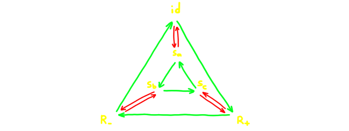

Графы Кэли, мост между структурой и формой,
В их линиях – коды групп, вечные как время.
Как красиво танцуют они, открывая портал в глубины знаний,
В их узлах спрятаны мудрость и гармония, словно звезды в ночи.
На перепутье математики и философии,
Они освещают путь к пониманию вечного ритма.
Философский стих от ChatGPT
В прошлой лекции мы познакомились с понятием группы. Напомним определение, в этот раз написав его на более
"математическом" языке:
Определение: Множество \(G\) называется группой, если на нём введена бинарная операция \(\cdot\),
удовлетворяющая следующим свойствам:
Ассоциативность: \(\forall x, y, z \in G\)
\[ (x \cdot y) \cdot z = x \cdot (y \cdot z). \]
Существование нейтрального элемента:
\(\exists e: \forall x\in G\)
\[ e \cdot x = x \cdot e = x. \]
Существование обратных элементов:
\(\forall x \in G \ \exists y \in G:\)
\[ x \cdot y = y \cdot x = e. \]
Также было введено понятие коммутативности:
Определение: Группа \(G\) называется коммутативной, если \(\forall a, b \in G\)
\[a\cdot b = b\cdot a\]
В этой лекции мы изучим как можно конструировать группы с помощью, так называемых, порождающих и соотношений,
а так же увидим как можно "нарисовать" группу.
Для начала, рассмотрим следующий пример: пусть дана группа остатков по модулю \(n\): \(\mZ / n\).
Заметим, что элемент \(1 \in \mZ/n\) обладает следующим свойством:
любой элемент \(k \in \mZ\) получается с помощью сложения единицы с самой собой достаточное число раз.
Действительно,
В таких случаях говорят, что группа порождена одним элементом.
Многие группы не могут быть порождены одним элементом. Например, если взять произвольный элемент \((m, n) \in
\mZ\times\mZ \), то порождённые им элементы будут образовывать лишь небольшую "линию" в решётке, т.е. точки вида
\((k\cdot m, k\cdot n)\), где \(k \in \mZ\). Однако заметим, что любой элемент может быть получен с помощью
прибавления (или вычитания) двух фиксированных элементов, например \((1, 0)\) и \((0, 1)\):
Как и в предыдущем случае, мы говорим, что элементы \((1, 0)\) и \((0, 1)\) порождают группу
\(\mZ\times\mZ\).
Аналогично мы можем рассмотреть общее определение:
Определение: Пусть \(G\) — группа, а \(S \subset G\) – некоторое подмножество \(G\). Говорят, что
\(S\) порождает \(G\), если для любой элемент \(x \in G\) может быть представлен как произведение
\[x = s_1 \cdot s_2 \cdot ... \cdot s_n,\]
где \(s_k \in S\) или \(s_k^\inv \in S\) для любого \(k = 1,...,n\).
Из предыдущих примеров следует, что \(\{1\}\) порождает \(\mZ\), а \( \{ (1, 0), (0, 1) \} \) порождает
\(\mZ\times\mZ\).
Задача 1.
a) Найдите ещё одно порождающее множество, состоящее из одного элемента, для группы \(\mZ\).
Докажите, что других таких нет.
b*) Докажите, что два числа \(k\) и \(m\) порождают \(\mZ\), тогда и только тогда, когда \(\text{НОД}(k, m) =
1\).
Указание: докажите, для начала, что можно получить единицу.
Задача 2.
a) Найдите все одноэлементные порождающие множества для каждой из групп \( \mZ/3\), \(\mZ/4\), \( \mZ/5\), \(
\mZ/6\), \( \mZ/7\), \( \mZ/8\), \( \mZ/9\), \( \mZ/10. \)
b*) Докажите, что остаток \(k\) порождает \(\mZ/n\), тогда и только тогда, когда \(\text{НОД}(k, n) = 1.\) Задача 3.
a) Докажите, что множество \( \{ (3, 2), (-2, -1) \} \) порождает \(\mZ \times \mZ\)
b) Докажите, что множество \( \{ (1, -1), (1, 1) \} \) не порождает \(\mZ \times \mZ\)
c**) Докажите, что множество \( \{ (a, b), (c, d) \} \) порождает \(\mZ \times \mZ\) тогда, и только тогда, когда
\[ad - bc = \pm 1.\]
Если нам известно порождающее множество, мы можем красивым образом нарисовать нашу группу. Делается это так:
пусть \(G\) группа, а \(S\) — порождающее множество. Расположим все элементы из \(G\) в виде точек на
плоскости
(или в пространстве), а каждому элементу \(s \in S\) присвоим свой цвет \( \text{color}_s \). Теперь, будем
соединять наши точки разноцветными стрелками по следующему принципу: из элемента \(g\) будет вести стрелка в элемент
\(h\) цвета \( \text{color}_s \), если \(h = g \cdot s \). Вот несколько примеров того, как это делать (для каждой
группы выбрано несколько разных порождающих множеств):
1. \(G = \mZ/7, S = \{1\}, \{2\}, \{3\}\). Каждый из этих элементов порождает всю группу
2. \(G = \mZ/6, S = \{1\}, \{2, 3\}\). Заметим, что в этом случае \(2\) или \(3\) по отдельности не порождают
всю группу, т.к. \(6\) делится на \(2\) и \(3\), но если взять оба числа, то, поскольку они взаимно просты,
из них можно получить единицу, а значит и все остальные элементы.
3. Группа симметрий треугольника \(G = D_3, S = \{R_+, s_a\}\). Обратите внимание, что в этом случае не существует
одного порождающего элемента.

Похож на граф для \(\mZ/6\), но отличается!
Такие конструкции называются графами Кэли. Они позволяют взглянуть на группы с наглядной стороны. Потом мы
увидим, что они так же связаны с определёнными топологическими объектами. Графы Кэли иногда позволяют увидеть, общие
свойства двух разных групп. Введем следующее определение:
Определение: пусть \(G_1, G_2\) — группы. Их произведением называется группа \(G_1 \times G_2\),
состоящая из пар \((g_1, g_2)\), где \(g_1 \in G_1, g_2 \in G_2\). Операция вводится покомпонентно:
При сложении первые координаты складываются по модулю два, а вторые — по модулю три. Например,
\[ (1, 1) + (1, 2) = (0, 0).\]
У этой группы есть очевидное порождающее множество из двух элементов: \(S = \{(1, 0), (0, 1)\}\). Посмотрим на граф
Кэли этой группы:
Мы видим, что он точно такой же, как и у группы \(\mZ/6\), если у неё взять в качестве порождающих элементы \(2\) и
\(3\). Иначе говоря, эти две группы абсолютно одинаковы, с точностью до переобозначения элементов. В частности,
мы можем сделать вывод, что группа \(\mZ/2 \times \mZ/3\) порождена всего одним элементом, например \((1, 1)\).
Когда у двух групп одинаковые графы Кэли, говорят что группы изоморфны.
Определение (неформальное): Группы \(G_1\) и \(G_2\) называются изоморфными (обозначается \(G_1 \cong
G_2\)), если существуют \(S_1\) — порождающее множество для \(G_1\), \(S_2\) — порождающее
множество для \(G_2\), такие что графы Кэли этих групп построенные по этим порождающим множествам одинаковы (с
точностью до переопределения символов и цветов).
Например, мы увидели, что \(\mZ/6 \cong \mZ/2 \times \mZ/3\). Изоморфные группы обладают абсолютно одинаковыми
свойствами, такими как количество элементов, коммутативность и прочее. Например, мы сразу можем заключить, что
\(\mZ/6\) не изоморфна группе симметрий треугольника, т.к. первая группа коммутативна, а вторая — нет.
Задача 4. Докажите, что любая группа, порождённая одним элементов изоморфна либо \(\mZ / n\) для некоторого
\(n\), либо \(\mZ\). Такие группы называются циклическими (\(\mZ\) — "бесконечная циклическая группа").
Задача 5. Докажите, что
1. \(\mZ/3 \times \mZ/5 \cong \mZ/15\). Указание найдите один элемент, который порождает эту
группу
2. \(\mZ/2 \times \mZ/2 \not\cong \mZ/4 \).
Важно заметить, что даже одна и та же группа может иметь два совершенно разных графа Кэли. Поэтому для того, чтобы
доказать, что две группы неизоморфны, не достаточно рассмотреть их произвольные графы Кэли. Рассмотрим ещё несколько
примеров.
4. \(G = \mZ, S = \{1\}, \{2, 3\}\). Аналогично случаю с остатками, \(2\) или \(3\) по отдельности не порождают
всю группу, но, т.к. \(1 = 3 - 2\), все элементы можно получить с помощью этих двух элементов. В этом случае
видно, что графы Кэли существенно разные.
Отдельно хочется рассмотреть пример, данный в конце предыдущей лекции — свободную группу ранга \(2\).
Напомним как она строится: её элементы — редуцированные слова из букв \(a, b\) и обратных к ним,
включая пустое слово. "Редуцированные" означает, что мы сокращаем все тривиальные сочетания вида \(aa\inv\).
Операция — просто конкатенация слов. В этом случае видно, что множество \(S = \{a, b\}\) порождает всю группу.
Мало того, для любого слова существует единственное представление его в виде произведения элементов вида
\(a, b, a\inv, b\inv\) (просто по определению группы). На картинке это означает, что полученный граф будет без
циклов (т.е. деревом). Вот как он выглядит:
Это свойство можно обобщить.
Определение (не очень формальное): Группа \(G\) называется свободной, если существует такое
порождающее множество \(S \subset G\) такое, что соответствующий граф Кэли не имеет циклов. Если \(S\) —
конечное множество, то число элементов в \(S\) называется рангом этой группы.
Замечание: вообще говоря, нужно доказать, что ранг группы определён корректно, т.е. что мы не можем получить два
разных числа если возьмём два разных порождающих множества. Мы не будем доказывать это здесь, но это правда.
В прошлом примере мы рассмотрели пример с группой ранга \(2\). Очевидно из определения следует, что свободная группа
ранга \(1\) это просто \(\mZ\). Свободная группа ранга \(3\) будет иметь примерно следующий вид:
Свободные группы в некотором смысле являются источниками для всех остальных групп. А именно, если дана группа, у
которой есть \(n\) порождающих, то она может быть получена из свободной группы с помощью "склейки" некоторых
элементов в свободной группе ранга \(n\). Вот несколько примеров:
Возьмём группу \(\mZ/k\) остатков по модулю \(k\). Вспомним, как сравниваются числа по модулю \(k\):
\[ a \equiv_k b \iff a - b \ \text{делится на} \ k. \]
Знак \(\equiv\) очень похож на \(=\) и это не случайно — он обладает почти всеми свойствами, которыми
обладает равенство! Например:
\(a \equiv_k a\) для любого \(a\).
Если \(a \equiv_k b\), то \(b \equiv_k a\) для любых \(a, b\).
Если \(a \equiv_k b\) и \(b \equiv_k c\), то \(a \equiv_k c\) для любых \(a, b, c\).
Также этот значок себя ведет хорошо по отношению к операции сложения.
Если \(a \equiv_k b\), то для любого \(c\)
\[a + c \equiv_k b + c \]
Если \(a \equiv_k b\), то \[-a \equiv_k -b.\]
Первые три условия означают, что всё множество целых чисел делится на \(k\) частей, каждая из которых состоит чисел
равных определённому остатку по модулю \(k\). Возникает идея — давайте "склеим" (будем считать строго равными)
все элементы внутри каждой части. Будем обозначать результирующие элементы через \([a]\), где \[[a] = [b]\] тогда,
и только тогда, когда \[ a \equiv_k b. \]
Эти "склеенные" кучки ведут себя хорошо относительно сложения, это гарантируется свойствами 4-5. Т.е.
А значит, после склейки, я могу точно так же складывать новые \(k\) элементов. А именно
\[[a] + [b] = [a + b]; \]
\[-[a] = [-a]\]
Но это сложение как раз эквивалентно сложению остатков — в каждом классе \([a]\) можно выбрать наименьшее
неотрицательное число, ему принадлежащее. Это и будет остаток при делении \(a\) на \(k\).
Изображение получения остатков для \(k = 5\)
Итого, мы представили группу \(\mZ/k\) как свободную группу ранга \(1\) (т.е. группу \(\mZ\)), в которой элементы
разбили на части и склеили эти части. Иначе говоря, мы начали рассматривать наши числа "с точностью до" чисел,
делящихся на \(k\). Такой процесс называется факторизацией, мы с ним познакомимся более подробно в следующей
лекции.
Ещё один пример. Рассмотрим группу \(\mZ\times\mZ\). Мы знаем, что она порождена двумя элементами. Как получить её
с помощью склейки элементов свободной группы ранга \(2\). Вспомним ещё раз, как выглядят элементы в свободной группе.
Это слова из двух букв, \(a\) и \(b\), и обратных к ним. Нам нужно ввести отношение \(\equiv\), так как мы сделали
это в прошлый раз. Сделаем это таким образом: два слова будут считаться эквивалентными, если они получаются друг из
друга перестановкой букв и добавлением/удалением тривиальных комбинаций (таких, как \(aa\inv\)). Например
\[ aba\inv \equiv aa\inv b \equiv b\]
Упражение: сформулируйте и проверьте свойства, аналогичные 1-5 для такого значка.
Заметим, что теперь любое слово может быть приведено к некоторой "канонической" форме, а именно, если перебросить
все \(a, a\inv\) влево и сократить все тривиальные пары, мы придем к виду \(a^m b^n\), где \(m, n\) —
некоторые целые числа.
После этого упражнения легко видно, что показатели степени у \(a\) и \(b\) в слове \(a^{m}b^{n}\) ведут себя так же,
как и координаты в \(\mZ \times \mZ\). Если сейчас нарисовать граф Кэли нашей "склеенной" свободной группы, взяв
в качестве порождающих \(a\) и \(b\), то мы увидим ту же самую квадратную решётку!
Задача 6: Докажите, что группу \(\mZ^2 \times \mZ^3\) можно получить из свободной следующим образом:
в добавок к тому, чтобы считать одинаковыми все слова с точностью до перестановки букв, мы еще говорим, что для
любого слова \(w\),
\[w \equiv w \cdot a^2 \equiv w \cdot b^3\]